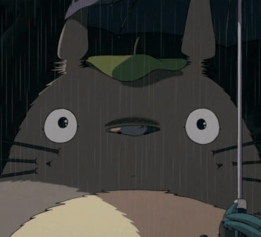

My Neighbor Totoro
I'm pretty sure they were dust bunnies.
You mean real dust bunnies? Like in my picture book?
Dust bunnies make much more sense than ghosts.
Why? Well, ghosts are a lot harder to see. But when you suddenly move from a lighted room to a dark one, you
can't see for a second,
and that's when the dust bunnies come out. Got it?
Come on out! Come out! Come on, dust bunnies!